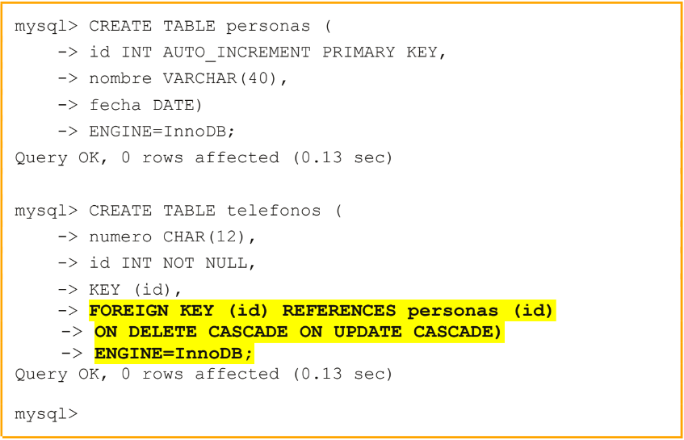
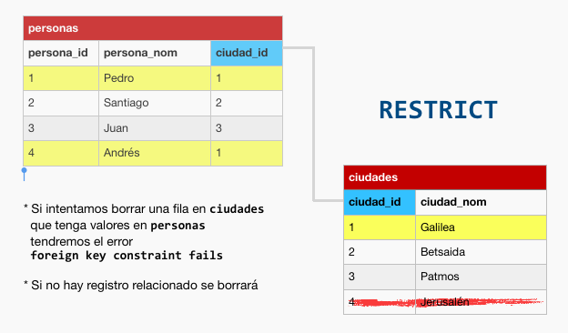
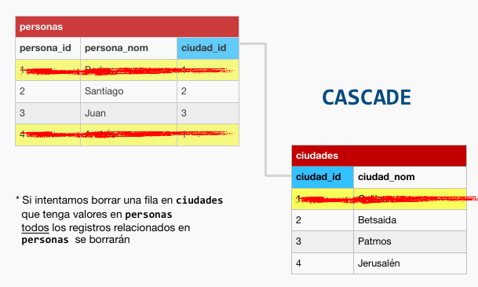
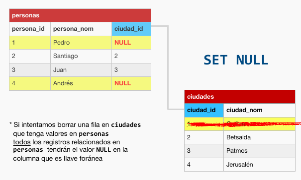

¿Qué son las Claves ajenas?
Las claves ajenas son elementos en una base de datos que establecen relaciones entre tablas al referenciar una clave única en otra tabla. Estas relaciones aseguran la consistencia de los datos entre las tablas y mantienen la integridad referencial del sistema.
¿Como se crean?:
Ejemplo usando tablas InnoDB:
Esta forma define una clave foránea en la columna 'id', que hace referencia a la columna 'id' de la tabla 'personas'. La definición incluye las tareas a realizar en el caso de que se elimine una fila en la tabla 'personas'.
ON DELETE (opción), indica que acciones se deben realizar en la tabla actual si se borra una fila en la tabla referenciada.
ON UPDATE (opción), es análogo pero para modificaciones de claves.
Existen cinco opciones diferentes.

RESTRICT:
Esta opción impide eliminar o modificar filas en la tabla referenciada si existen filas con el mismo valor de clave ajena.
CASCADE:
Borrar o modificar una clave en una fila en la tabla referenciada con un valor determinado de clave, implica borrar las filas con el mismo valor de clave ajena o modificar los valores de esas claves ajenas.
SET NULL:
Borrar o modificar una clave en una fila en la tabla referenciada con un valor determinado de clave, implica asignar el valor NULL a las claves ajenas con el mismo valor.
NO ACTION:
Las claves ajenas no se modifican, ni se eliminan filas en la tabla que las contiene.
En MySQL funciona igual que RESTRICT
SET DEFAULT:
Las claves ajenas no se modifican, ni se eliminan filas en la tabla que las contiene.